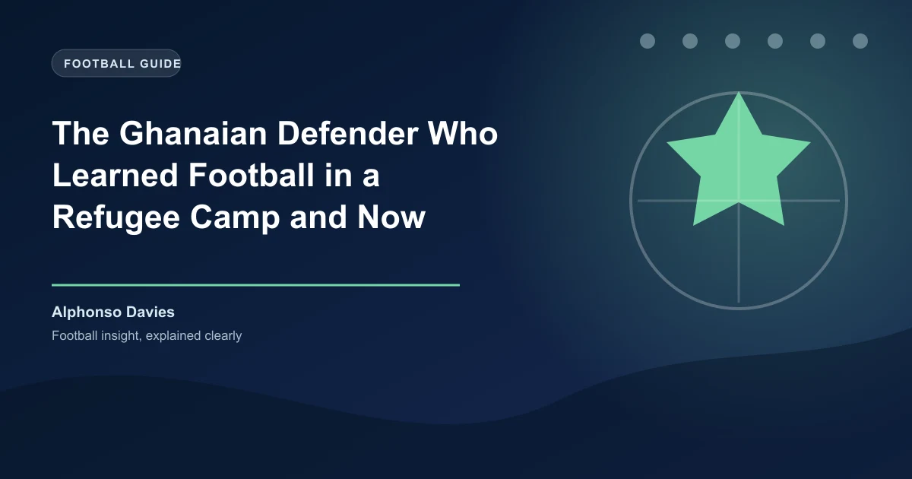

The Buduburam refugee camp sits about 45 kilometres west of Accra, Ghana. Established in 1990 by the United Nations High Commissioner for Refugees, it was built to house Liberians fleeing a brutal civil war that would claim over 200,000 lives. At its peak, Buduburam held more than 40,000 people. There was no clean water infrastructure. Food was scarce. Disease was common. And in one of its tents, in November 2000, a boy was born who would one day become the most famous refugee in world football.
His name is Alphonso Davies. He is a left-back for Bayern Munich, a Champions League winner, a Bundesliga champion five times over, and the first player born in the 21st century to play in the Champions League. He scored Canada's first ever men's World Cup goal at the 2022 tournament. And he is about to play his second World Cup at the 2026 edition, co-hosted by Canada, the country that took his family in when they had nothing.
His journey from a refugee camp in Ghana to the Allianz Arena is the most remarkable story in modern football.
Davies' parents, Victoria and Debeah, fled Liberia's First Civil War in the early 1990s. They crossed into Ghana and were placed in Buduburam, one of the largest refugee camps in West Africa. Alphonso was born there in 2000, the youngest of four children. The family lived in a small tent. Clean drinking water required a walk and a wait. Food was rationed. Football was the only escape.
"Football was our happy place," Davies has said of those early years. He learned the game on the dusty, uneven ground between rows of tents, kicking a ball that was more tape than leather. His earliest memories are not of toys or television but of chasing a football across the camp's dirt paths, barefoot, with other refugee children who had nothing else.
When Davies was five years old, the family was resettled in Edmonton, Alberta, Canada. They arrived in winter. Alphonso had never seen snow. He had never worn a coat. He had never been inside a school. The adjustment was brutal. But he still had a football.
Football in Canada in the early 2010s was a niche sport, overshadowed by hockey and basketball. But Davies' talent was undeniable. He joined the Edmonton Strikers youth club and quickly outgrew every age group. By 14, he was training with the Vancouver Whitecaps residency programme. By 15, he had signed a contract with the Whitecaps USL side. By 16, he had made his MLS debut.
On the international stage, he chose Canada over Liberia and Ghana — the countries of his parents' origin and his own birth. He made his senior debut for Canada at 16, becoming the youngest player ever to appear for the Canadian men's national team. By 17, he was a regular starter. By 18, he had agreed to join Bayern Munich for an MLS-record transfer fee.
"I don't know what you were able to see back home, whether they showed the photos or not, but they showed photos of him when he was five years old, him coming to Canada and Canada adopting him as his home country," said Peter Montopoli, General Secretary of Soccer Canada, after FIFA awarded the 2026 World Cup to the North American bid. The impact of Davies' story on that decision was undeniable.
| Year | Milestone |
|---|---|
| 2000 | Born in Buduburam refugee camp, Ghana |
| 2005 | Family resettled in Edmonton, Canada |
| 2016 | MLS debut for Vancouver Whitecaps at age 15 |
| 2017 | Senior Canada debut — youngest ever at 16 |
| 2018 | Signs with Bayern Munich for MLS-record fee |
| 2020 | Wins treble: Bundesliga, DFB-Pokal, Champions League |
| 2022 | Scores Canada's first men's World Cup goal vs Croatia |
| 2025 | Extends Bayern contract through 2030 |
| 2026 | Leads Canada at home World Cup |
Joining Bayern Munich at 18 would have been overwhelming for any player. For a boy who had been born in a refugee camp, it was another universe entirely. Davies handled it with a composure that would define his career. He made his first-team debut in 2019, became a starter under Hansi Flick during the 2019-20 season, and by the time Bayern won the Champions League in Lisbon in August 2020, he was one of the most feared left-backs in world football.
His speed is his signature — he has been clocked at 36.5 km/h, one of the fastest recorded speeds in Bundesliga history. But he is more than pace. His dribbling, his composure in possession, and his ability to read the game at both ends of the pitch have made him indispensable at Bayern. He signed a contract extension through 2030 in 2025, committing the peak years of his career to the club.
At the 2022 World Cup in Qatar, Davies wrote his name in Canadian football history by scoring his country's first ever men's World Cup goal — a towering header against Croatia. Canada finished bottom of their group, but the moment was symbolic: the boy from Buduburam had put Canadian football on the world map.
The 2026 tournament is different. Canada are co-hosts. They will play group matches in Toronto and Vancouver, in front of crowds that will include families who arrived in Canada the same way the Davies family did — with nothing but hope and a suitcase. Alphonso Davies is now the face of Canadian football, the most recognisable athlete in the country's sporting landscape outside of hockey.
Canada have been drawn in a group with Mexico, Poland, and Saudi Arabia. They are not favourites to advance, but they are not the pushovers they were in 2022. Davies is supported by a generation of players — Jonathan David, Tajon Buchanan, Stephen Eust�quio, Cyle Larin — who have all developed in Europe and represent the deepest talent pool Canada has ever produced.
Davies himself has spoken about what it means to play a World Cup on home soil, in the country that gave his family a second chance."Canada took us in," he has said. "Canada gave us a home. Playing for Canada is my way of saying thank you."
Davies' story is not unique in its broad strokes — many refugee families have produced professional footballers — but it is unmatched in its scale. He is the most successful player ever to emerge from a refugee camp. He is a Champions League winner, a multiple Bundesliga champion, and a World Cup goalscorer. And he is still only 25 years old.
His mother Victoria still lives in Edmonton. She still remembers the walk for water in Buduburam. She still has photos of Alphonso as a toddler, barefoot in the dust, chasing a ball."A kid born in a refugee camp wasn't supposed to make it," Davies once tweeted. He was right. But he did make it. And on June 15, 2026, when Alphonso Davies steps onto the pitch at BC Place in Vancouver to face Mexico in Canada's World Cup opener, he will carry the hopes of a nation that took him in — and the memory of a camp in Ghana where it all began.
Get free daily football predictions for every World Cup match, including Canada's campaign.
Generate optimized accumulator combinations from today's AI-powered predictions. Set your target odds and get instant ticket suggestions.
Free Ticket Builder →